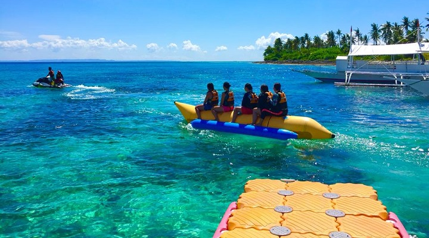
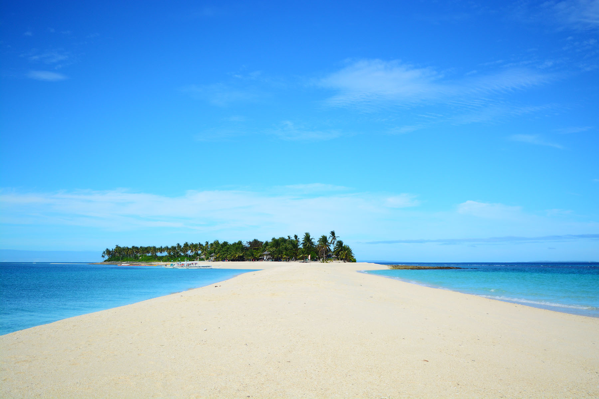
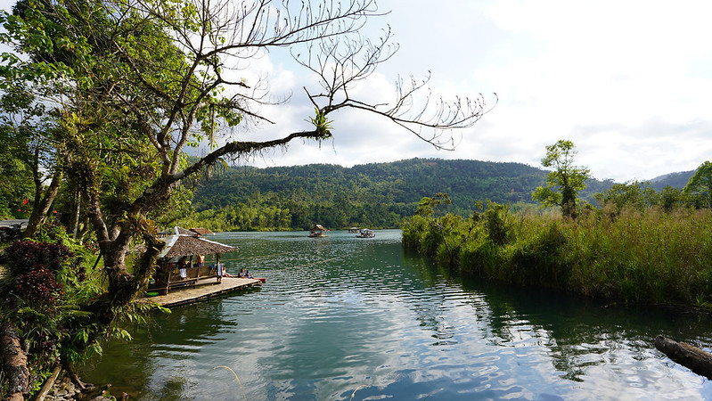
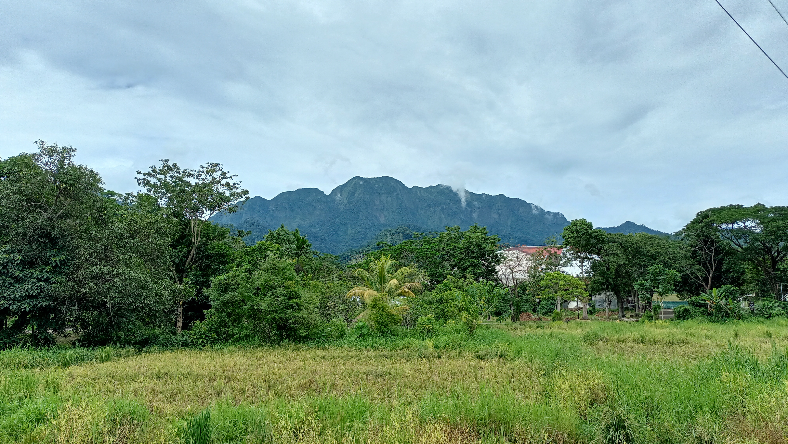

Famous for its stunning sandbars and crystal-clear waters, Kalanggaman Island is not just a beach destination—it’s also a perfect getaway for leisure and outdoor recreation. Located off the coast of Leyte, the island offers a peaceful, crowd-free environment where visitors can relax, unwind, and enjoy a variety of simple yet refreshing activities surrounded by nature.

While often celebrated for its pristine shoreline, Kalanggaman Island is equally known as a destination for relaxation and recreational activities. With its wide open spaces and calm surroundings, the island is ideal for picnics, beach camping, and casual outdoor games. Visitors can spend their day lounging under the sun, walking along the long sandbars, or simply enjoying the gentle sea breeze in a quiet, natural setting.
The island also offers opportunities for light adventure without being overwhelming. Activities such as kayaking, snorkeling, and paddleboarding allow visitors to explore the surrounding waters at their own pace. Unlike more crowded tourist spots, Kalanggaman provides a laid-back atmosphere where the focus is on slowing down and enjoying the moment—making it a perfect destination for those seeking both recreation and relaxation.

Visitors can enjoy activities like kayaking, snorkeling, and paddleboarding.
There are limited structures on the island, preserving its natural and peaceful environment.
It is located off the coast of Palompon, Leyte, making it accessible by boat from the mainland.

